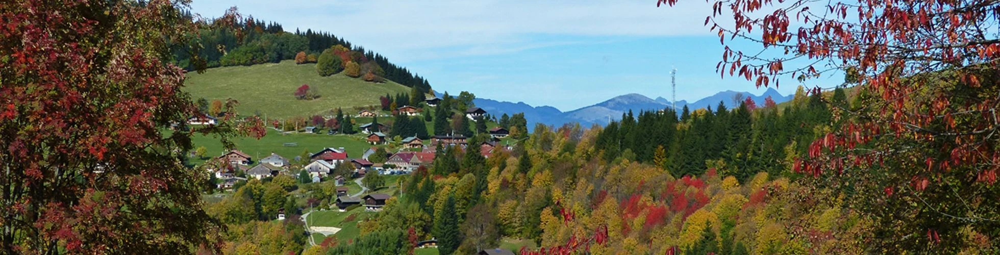

Sport & convivialité
Tournoi de pétanque et Full Moon, rendez-vous de ski nocturne : des occasions de se retrouver autour d’une pratique partagée.
L’association Romme 1300
Des rencontres, des initiatives et une même envie : contribuer à la vie de Nancy-sur-Cluses et partager ce qui rend notre village attachant.

Source : mairie de Nancy-sur-Cluses · Romme en automne
Notre raison d’être
Romme 1300 a pour but de dynamiser et de promouvoir Nancy-sur-Cluses à travers des événements festifs et des activités sportives, culturelles et artistiques.
Cette ambition prend une forme simple : créer des occasions de se rencontrer et faire découvrir le territoire sous différents angles. Le sport, les traditions et la photographie peuvent devenir autant de portes d’entrée vers la vie locale.
Des actions concrètes
La mairie recense notamment ces initiatives de Romme 1300.
Tournoi de pétanque et Full Moon, rendez-vous de ski nocturne : des occasions de se retrouver autour d’une pratique partagée.
Une fête du pain a été organisée en 2019 avec l’association Du Haut des Fayards. Une action qui relie patrimoine et moment collectif.
La photographie fait aussi partie des projets mentionnés pour découvrir ou redécouvrir Nancy-sur-Cluses.
Ces réalisations donnent un aperçu de la vie associative. Elles n’annoncent pas de nouvelles éditions : prochaines dates à confirmer.
Nos objectifs
Créer des moments accessibles et conviviaux où l’on peut se retrouver, faire connaissance et partager la vie du village.
Mettre en lumière les paysages, les traditions et les initiatives de Nancy-sur-Cluses à travers des activités variées.
Encourager les idées et les contributions qui peuvent enrichir la vie locale, du petit coup de main à l’organisation d’un rendez-vous.
Prendre part à l’aventure
Vous avez une idée d’activité, envie de participer à un événement ou simplement de mieux connaître l’association ? Engageons la conversation.
Contacter l’asso sur InstagramDécrivez votre projet, à qui il s’adresse et ce dont vous auriez besoin pour le concrétiser.
Faites connaître vos disponibilités et ce que vous aimeriez apporter à un prochain rendez-vous.
Photographie, culture locale, organisation : vos compétences peuvent enrichir un projet collectif.
Présentation éditoriale fondée sur les informations publiques de l’association.
Mairie de Nancy-sur-Cluses — Romme 1300Objet de l’association — fiche RNA W742004010